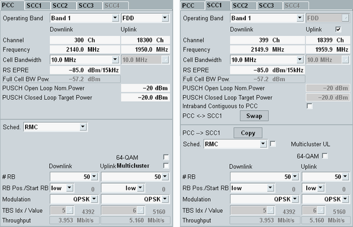

The main view provides the most important settings for fast access.
For carrier aggregation scenarios, the settings for the individual component carriers are provided on separate tabs.

- Duplex mode
See "General Settings" - RF frequency settings
See "RF Frequency" - Cell bandwidths
See "Physical Cell Setup" - Most important DL power parameters (RS EPRE, full cell BW power)
See "Downlink Power Levels" - Most important UL power parameters
See "Uplink Power Control" - Intra-band contiguous SCC configuration
See "Intraband Contiguous UL"
The "Swap" button is only available on SCC tabs. It exchanges PCC settings with the settings of one SCC.
- Operating band, channel number and frequency
- Cell bandwidth
- Active scheduling with all related settings (RB configuration, modulation etc.)
Only the active scheduling settings for the active cell bandwidth are written to the other carrier. The settings related to inactive scheduling types or inactive cell bandwidths are not swapped.
- Before swap
– PCC: band 3, channel DL 1500 / UL 19500 – SCC1: band 20, channel DL 6300 / UL 24300 - After swap
– PCC: band 20, channel DL 6300 / UL 24300 – SCC1: band 3, channel DL 1500 / UL 19500
- Before swap
– PCC: 10 MHz, RMC, DL 50 RB, UL 40 RB – SCC1: 5 MHz, user-defined channel, 22 RB – PCC inactive settings for 5 MHz, user-defined channel: DL 15 RB, UL 18 RB - After swap
– PCC: 5 MHz, user-defined channel, DL 22 RB, UL 18 RB – SCC1: 10 MHz, RMC, 50 RB – PCC inactive settings for 10 MHz, RMC: DL 50 RB, UL 40 RB – SCC1 inactive settings for 5 MHz, user-defined channel: 22 RB
If you perform a swap for an established connection, all connection states after the swap equal the states before the swap. Either redirection or blind handover is used for the swap, see "Operating Band Change, Frequency Change".
Remote command:If a transmission scheme using several data streams is active, the parameter "MIMO DL Stream" allows you to switch between the settings of the downlink streams. The parameter is disabled if all streams use the same set of settings.
The "Copy" button is only available on SCC tabs. It copies PCC settings to an SCC.
- Cell bandwidth
- Active scheduling with all related settings (RB configuration, modulation etc.)
- The active scenario is not symmetric for the carriers. Example: The scenario allows MIMO for the PCC but not for the SCC.
- The PCC scheduling type is not supported for the SCC (for example SPS).
- The resource allocation type is two for the PCC and zero for the SCC.
- The PCC scheduling type equals RMC. The PCC uses transmission mode 1 and the SCC uses another transmission mode (or vice versa).